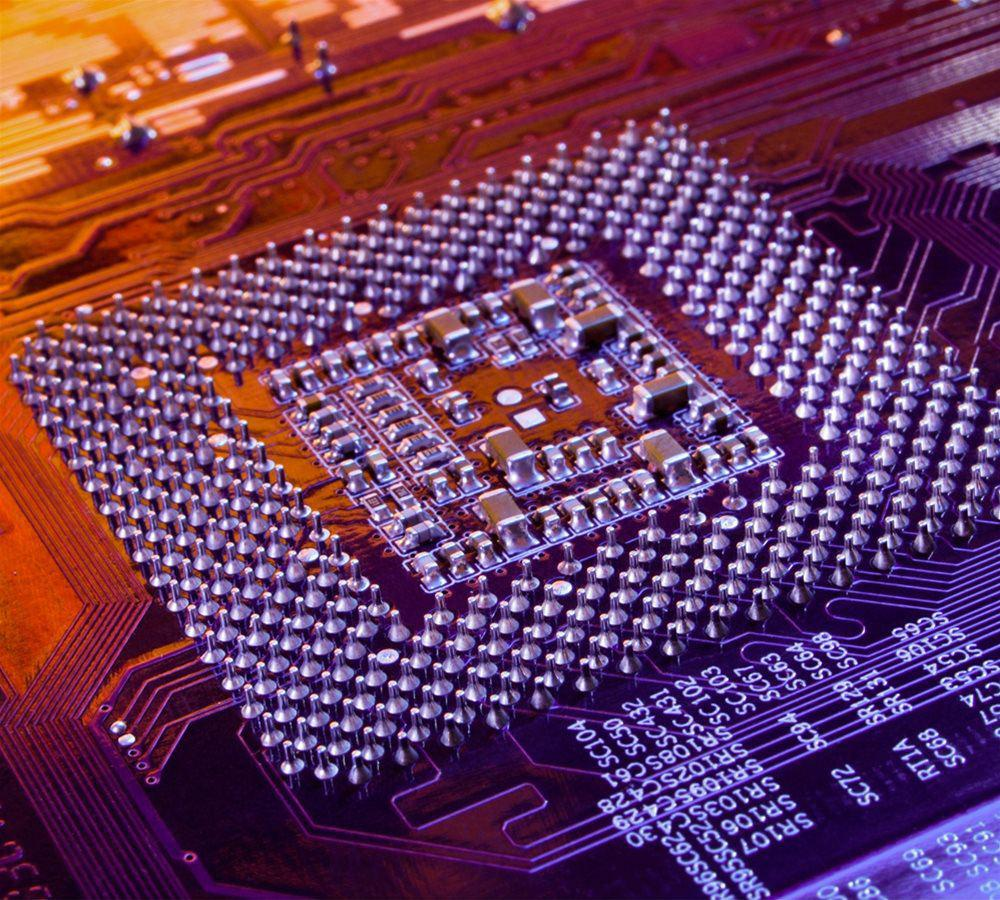
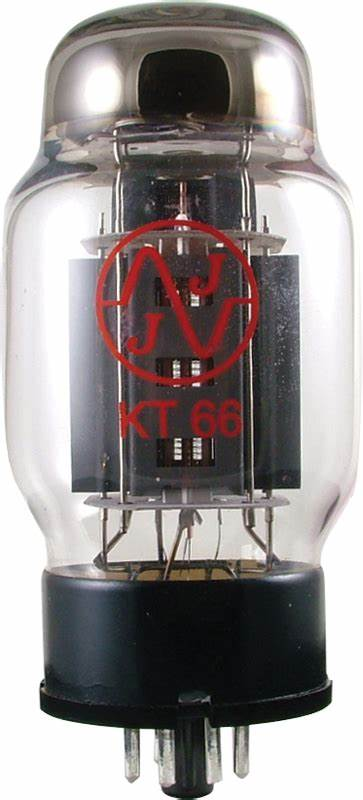
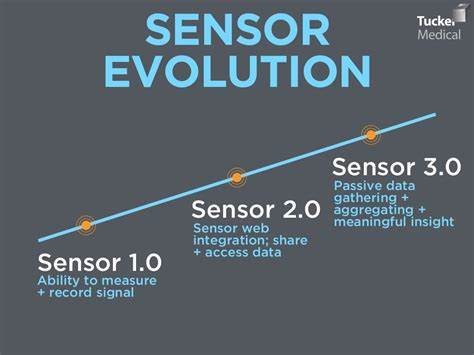

A microprocessor is a computer processor where the data processing logic and control is included on a single integrated circuit, or a small number of integrated circuits. The microprocessor contains the arithmetic, logic, and control circuitry required to perform the functions of a computer's central processing unit. The integrated circuit is capable of interpreting and executing program instructions and performing arithmetic operations.The microprocessor is a multipurpose, clock-driven, register-based, digital integrated circuit that accepts binary data as input, processes it according to instructions stored in its memory, and provides results (also in binary form) as output. Microprocessors contain both combinational logic and sequential digital logic, and operate on numbers and symbols represented in the binary number system.

A vacuum tube is a device used to control the flow of electric current using a vacuum in a sealed container, which usually takes the form of a glass tube, hence the name. The vacuum tube is the predecessor of the modern transistor and was used in similar ways as electronically controlled switches, rectifiers, amplifiers, oscillators and in other creative ways that transistors may be used today. The cathode ray tube (CRT) used extensively in early television sets and computer monitors as screens is a kind of vacuum tube.

Sensors have existed for longer than the internet has, and much longer than the Internet of Things (IoT). Once upon a time, canaries sensed danger and martyred themselves in coal-mines. Now drones do sensing in hurricanes and droids do it in nuclear reactors. While at the sensor conference in San Francisco this year, I was struck by the realization that most of the companies participating have been building sensor technology for decades, pre-dating IoT. Connectivity to the cloud seems to have given sensors a new lease of life. Since sensors are an essential component of IoT applications, here is a quick look at the evolution of sensors of all shapes and sizes and across industries; from the days of canaries to the age of drones.
ARM stands for Advanced RISC Machine. It is one of the most licensed and extensive processor cores in the world. In the year of 1978, first ARM processor was introduced by Cambridge University. The first ARM processor was produced by Acorn Group Of Computers in year 1985. ARM was founded and became very popular in 1990. In 2007, ARM processors were used in more than 98% of mobile phones and approximately 10 billion processors were shipped in 2008. ARM was the latest technology which was replaced by micro-controllers and microprocessors. In general, ARM is a 16-bit/32-bit processor or controller.
developed by Besufkad Alemayehu
Ugr/21339/13
Department of Computer Science
@2023